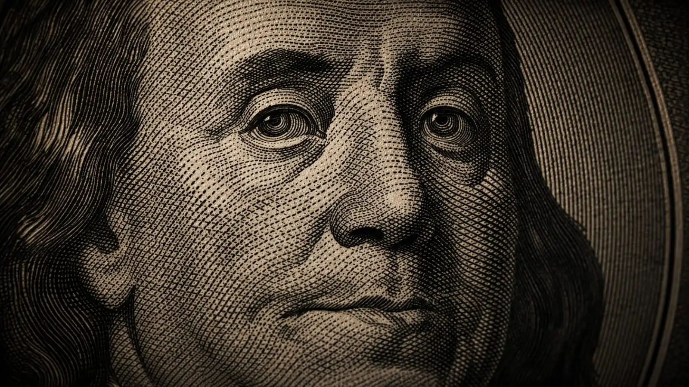

E n cualquier momento una persona puede perder mucho dinero sin importar su preparación, condición de vida o estatus. Para perder dinero, muchas personas se imaginan que es un proceso que procede de una consecuencia como las malas inversiones o grandes crisis económicas.
No obstante, los siguientes estudios en la historia del dinero muestran algo más curioso: que muchas fortunas se han perdido más por errores simples que parecían insignificantes en su momento.
Que por un proceso con riesgos fríamente calculados. Desde decisiones impulsivas hasta oportunidades ignoradas, algunos de estos errores financieros han terminado costando millones e incluso miles de millones con el paso del tiempo.
Estas son algunas curiosidades del mundo del dinero que muestran cómo una decisión aparentemente pequeña puede dejar a alguien muy acaudalado en la quiebra total.
- 1. Caso 1: Rechazar una oportunidad que luego vale miles de millones
- 2. Caso 2: Vender demasiado pronto algo que luego se vuelve extremadamente valioso
- 3. Caso 3: Ignorar objetos coleccionables que con el tiempo se vuelven tesoros
- 4. Caso 4: Tomar decisiones impulsivas con grandes cantidades de dinero
- 5. Caso 5: Subestimar el poder del tiempo en el dinero
1. Rechazar una oportunidad que luego vale miles de millones
Uno de los errores financieros más sorprendentes ocurre cuando alguien rechaza una oportunidad que, años después, se convierte en un negocio gigantesco.
En la historia de los negocios existen múltiples ejemplos de inversionistas que tuvieron la posibilidad de participar en empresas que hoy valen miles de millones, pero decidieron no hacerlo.
En su momento, la decisión parecía razonable. Nadie podía prever el futuro. Pero con el tiempo, esa oportunidad perdida se transforma en uno de los “qué hubiera pasado si…” más costosos del mundo financiero.
Un ejemplo de este caso muy reconocido es el de Ronald Wayne y la empresa Apple Inc. En 1976, Wayne fundó Apple junto con Steve Jobs y Steve Wozniak. Al principio tenía el 10 % de la empresa.
Pero apenas 12 días después, Wayne decidió vender su participación por 800 dólares (y luego recibió unos 1.500 dólares adicionales para renunciar a cualquier derecho futuro).
Su decisión fue principalmente por miedo a las deudas y riesgos legales, ya que era el único socio con bienes que podían ser embargados si la empresa fallaba.
Lo que pasó después
Con el paso de los años, Apple se convirtió en una de las compañías más valiosas del mundo. Ese 10 % que Wayne vendió hoy habría valido decenas o incluso más de 200 mil millones de dólares, dependiendo del momento del mercado.
Después de tomar esta decisión, quizás no pudo dormir en años, y es una clara historia de que la seguridad de algunas cosas materiales no reemplaza un futuro brillante.
2. Vender demasiado pronto algo que luego se vuelve extremadamente valioso
Otro error curioso del mundo del dinero ocurre cuando alguien vende un activo demasiado pronto y no le da el tiempo suficiente de crecer o entrar en la etapa de valorización.
Esto ha ocurrido con obras de arte, objetos coleccionables, terrenos e incluso acciones de empresas que más tarde multiplicaron su valor de forma exponencial.
En muchos casos, quienes vendieron obtuvieron ganancias en ese momento, sí. Pero el problema viene después de años, cuando esos mismos activos alcanzaron precios históricos tan altos que nadie podría imaginar.
Un ejemplo real muy conocido de vender algo demasiado pronto ocurrió con el primer comprador de la pintura Salvator Mundi de Leonardo da Vinci.
El caso
Durante mucho tiempo se creyó que la obra era solo una copia antigua. En 1958, la pintura fue subastada en Christie's por apenas 45 libras esterlinas (unos pocos dólares). El comprador pensaba que era simplemente una obra antigua sin gran importancia.
Lo que ocurrió después
Décadas más tarde, expertos analizaron la pintura y concluyeron que sí era una obra original de Leonardo da Vinci.
En 2017, el cuadro fue vendido nuevamente en una subasta de Christie's. por 450,3 millones de dólares, convirtiéndose en una de las obras de arte más caras de la historia.
Este caso demuestra que el verdadero valor de un activo no siempre es evidente en el momento de venderlo.
Lo que en una época parecía una simple transacción sin importancia, con el paso del tiempo terminó convirtiéndose en uno de los ejemplos más sorprendentes de cómo vender demasiado pronto puede significar perder una fortuna histórica.

La raíz de tus peores decisiones económicas empieza mucho antes del dinero
3. Ignorar objetos coleccionables que con el tiempo se vuelven tesoros
Algunas de las historias más curiosas del dinero involucran objetos que parecían comunes, piezas de colección que solo ocupaban un lugar en el hogar, pero terminaron convirtiéndose en reliquias extremadamente valiosas.
Como monedas raras, billetes históricos, juguetes antiguos o artículos que ambientaban visualmente el entorno hogareño. Estos objetos después de ser subastados sorprendieron el mundo de los inversionistas que coleccionan estos elementos.
Muchas veces estos objetos estuvieron durante años en cajones, sótanos, en un cuadro colgado a la pared o en mercados de segunda mano, incluso fueron desechados por considerarse ya demasiado viejos y sin valor.
Pero quien no sabe de la historia detrás, está desperdiciando el valor real oculto y algunos de ellos terminaron valiendo miles o incluso millones.
El caso de la moneda “Flowing Hair”
En 2013, una familia en California encontró una moneda muy antigua mientras revisaba una pequeña colección que había pertenecido a un familiar.
La moneda resultó ser un Flowing Hair Silver Dollar, considerada por muchos expertos como una de las primeras monedas de plata acuñadas oficialmente en Estados Unidos.
Durante años había permanecido guardada como si fuera una pieza más de una colección antigua. Sin embargo, cuando fue analizada por especialistas y llevada a subasta, la moneda alcanzó un precio cercano a 10 millones de dólares, convirtiéndose en una de las monedas más caras jamás vendidas.
Historias como esta demuestran que el verdadero valor de algunos objetos no siempre es evidente a simple vista.
Lo que durante años puede parecer solo una pieza antigua olvidada en una colección, con el tiempo puede convertirse en un tesoro histórico capaz de sorprender incluso a los expertos del mundo del coleccionismo.
4. Tomar decisiones impulsivas con grandes cantidades de dinero
El dinero rápido también ha dado lugar a errores costosos. Ganadores de loterías, deportistas famosos y celebridades han perdido fortunas completas debido a decisiones impulsivas: inversiones mal evaluadas, gastos descontrolados o negocios poco claros.
Estas historias se han convertido en curiosidades financieras que muestran cómo incluso grandes cantidades de dinero pueden desaparecer si no se manejan con cuidado.
Un ejemplo que muchos deben conocer es el caso de Mike Tyson.
El caso
Durante su carrera, Tyson se convirtió en uno de los deportistas mejor pagados del mundo. Entre peleas, patrocinios y eventos llegó a ganar más de 400 millones de dólares. Sin embargo, años después terminó declarando bancarrota en 2003.
Qué ocurrió
Gran parte de su fortuna desapareció debido a:
- Gastos extremadamente altos, como mansiones, autos de lujo y joyas.
- Compras extravagantes, incluyendo tigres de mascota.
- Malas decisiones financieras y asesores poco confiables.
- Problemas legales y pagos millonarios.
El resultado
A pesar de haber ganado cientos de millones durante su carrera en el boxeo, Tyson acumuló deudas superiores a 20 millones de dólares cuando presentó su bancarrota.
Este caso suele mencionarse como un ejemplo clásico de cómo tener grandes cantidades de dinero no garantiza conservarlas si no existe una buena administración financiera.
5. Subestimar el poder del tiempo en el dinero
Una de las curiosidades más repetidas en el mundo financiero es cómo el tiempo puede multiplicar o destruir el valor del dinero.
Pequeñas cantidades invertidas durante décadas pueden crecer de forma sorprendente, mientras que retrasar decisiones financieras importantes puede representar una gran diferencia a largo plazo.
Por eso, muchas historias del mundo del dinero muestran que no siempre se trata de grandes decisiones, sino de pequeñas acciones que se repiten durante muchos años.
Un ejemplo real es el caso de las primeras ventas de Bitcoin.
El caso
En los primeros años de Bitcoin, alrededor de 2010, muchas personas que lo tenían decidieron venderlo o gastarlo cuando su valor era apenas de unos pocos centavos o dólares.
Uno de los casos más conocidos ocurrió cuando un programador pagó 10.000 bitcoins por dos pizzas, en lo que hoy se recuerda como el Bitcoin Pizza Day.
En ese momento parecía una transacción normal, porque cada bitcoin valía casi nada.
Lo que ocurrió después
Con el paso de los años, el precio de Bitcoin creció de forma enorme. En algunos momentos del mercado, esos 10.000 bitcoins llegaron a valer cientos de millones de dólares.
Todas estas historias muestran que el dinero no siempre se pierde o se gana por decisiones enormes, sino muchas veces por pequeños errores, oportunidades ignoradas o acciones impulsivas que con el paso del tiempo terminan teniendo consecuencias enormes.
En el mundo financiero, la diferencia entre una buena decisión y un error costoso muchas veces solo se entiende años después, cuando el verdadero valor del tiempo y de las decisiones se hace evidente.
La historia del dinero demuestra que muchas veces las mayores pérdidas no vienen de grandes crisis, sino de pequeñas decisiones que parecían insignificantes en su momento.